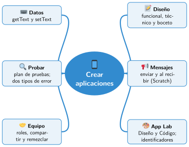

Bloque II · Programar con bloques
UD07 Crear aplicaciones
Sesiones
- Sesión 7.1 Diseñar una app
- Sesión 7.2 Mensajes y escenas en Scratch
- Sesión 7.3 App Lab: pantallas y botones
- Sesión 7.4 App Lab: textos y datos
- Sesión 7.5 Probar y corregir una app
- Sesión 7.6 Trabajar en equipo en línea
Al terminar la unidad
- 🛠️ Práctica con las herramientas
- 📝 Repaso de la unidad
- ✅ Autoevaluación
- 🎯 Situaciones de aprendizaje del bloque
Mapa mental de la unidad

✏️ Repasa la unidad con el mapa: tapa una rama y explica en voz alta lo que pone.